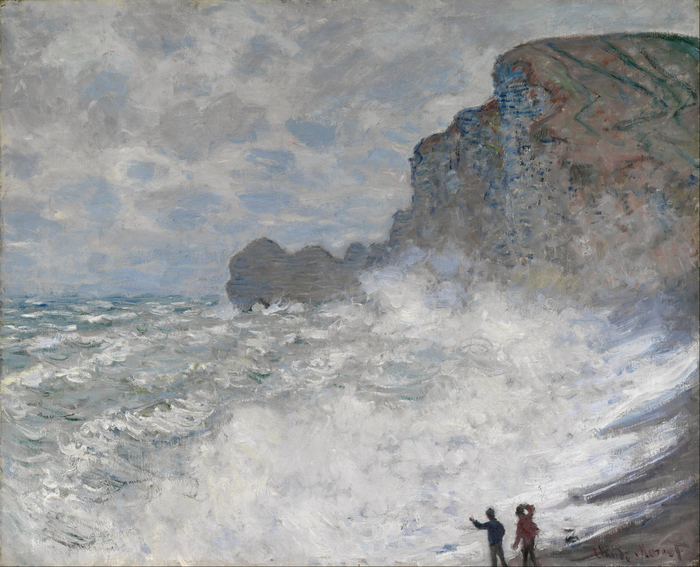

Claude - Tradable Blockchain. Part 2

The distinctive chalk pinnacle, arch and cliffs at Étretat are only about twenty miles along the coast from Le Havre, and became a frequent motif in his painting (as well as in those of many other landscape artists). Monet’s Rough Weather at Étretat (1883) is one of a series of paintings which he made there from the beach during storms. In his almost daily letters to Alice Hoschedé, Monet told of episodes in which the waves nearly got the better of him, and he was almost washed away with his easel and canvas.